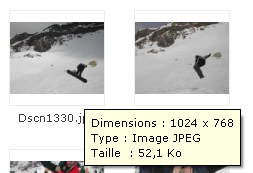
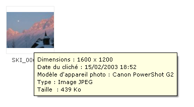
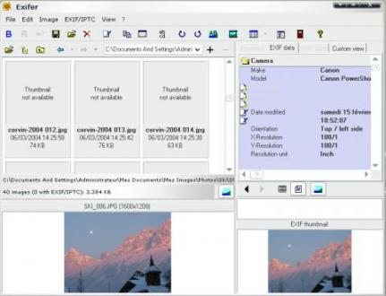

Vous savez tous qu'une image se compose de pixels de différentes couleurs et j'espère également que vous savez les afficher sur une page web... Mais savez-vous qu'une image contient également de nombreuses informations et qu'il est possible de les afficher assez simplement ?
C'est ce que je vais essayer de vous expliquer dans ce premier tutoriel !
Exchangeable image file format, voilà la signification d'Exif. Pour être un tout petit peu plus clair, la librairie Exif de PHP vous permet de travailler avec les métadonnées des images. Vous pourrez donc tirer de vos images toutes sortes d'informations, telles que la date de la création de l'image, l'appareil photo utilisé...
C'est valable pour toutes les images ? :D
Hélas, non ! Il y a une restriction. Seules les images de type Jpeg (.jpg ou .jpeg) et Tiff sont en mesure de stocker ces données dans leur en-tête (oui, c'est ici que sont stockées les données). Cependant, toutes les images stockent leur résolution.
Qu'est-ce que je peux trouver comme informations dans mes images ou photos ?
Dans les en-têtes de vos images, vous allez pouvoir rassembler de nombreuses informations telles que :
la marque de l'appareil photo ;
son modèle ;
le réglage de l'appareil (focale, vitesse d'obturation, flash...) ;
Ici, je vais vous présenter la méthode pour réaliser une fonction lecture_info_image, qui sera donc chargée de lire les informations de l'image, tout en vérifiant si elle est au bon format (Jpeg ou Tiff). Le code sera donc plus ou moins hors contexte et il vous faudra l'adapter à vos besoins. N'hésitez pas à lire la doc PHP au sujet d'Exif : http://fr.php.net/manual/fr/ref.exif.php.
Nous l'avons vu précédemment : la fonction Exif ne fonctionne qu'avec des images de type Jpeg ou Tiff, il va donc falloir faire une sélection avant de rentrer à proprement parler son l'utilisation. Pour cela, on va vérifier si l'image a bien une des extensions du tableau que l'on va passer en second paramètre à la fonction in_array(). On vérifie donc, en ayant pris soin de mettre l'extension en minuscules, si le texte situé après le point (donc, l'extension) correspond à l'un des formats d'image du tableau :
<?php
if(in_array(strtolower(end(explode('.', $img))), array('jpg', 'jpeg', 'tif', 'tiff'))) // Si fichier Jpeg ou Tiff
{
// Je lis les infos Exif
}
?>
Une fois assurés que l'image est d'un type correct, nous pouvons commencer à lire ses en-têtes avec la fonction exif_read_data() :
<?php
if($exif = exif_read_data($img, EXIF, true)) // Si le fichier $img contient des infos Exif
{
// Alors je lis ces informations
}
?>
Si l'image contient des informations Exif, alors ma variable $exif se verra remplie par ces informations. Il nous faut alors passer en revue le tableau qui est dans cette variable pour extraire les valeurs que l'on souhaite. On utilisera alors foreach :
<?php
foreach ($exif as $key => $section) // On parcourt la première partie du tableau multidimensionnel
{
foreach ($section as $name => $value) // On parcourt la seconde partie
{
$exif_tab[$name] .= $value; // Récupération des valeurs dans le tableau $exif_tab
}
}
?>
Mon but n'étant pas d'expliquer le foreach, je vous invite vivement à (re)lire le cours de M@teo21 si vous avez du mal avec ce code.
Le plus dur est fait ; il ne nous reste plus qu'à récupérer les valeurs que l'on vient de mettre dans le tableau. Bien entendu, elles ne sont pas forcement toutes utiles : c'est donc à vous de faire le tri. Je vous présente ci-dessous celles que j'ai utilisées.
Infos relatives aux photos
Une petite condition pour faire le tri des images (dans mon cas, chaque image est enregistrée dans une base avec un type :
<?php
$type = "photo_couleur";
if($type=="photo_n&b" || $type=="photo_couleur") {
if($exif_tab['FocalLength']) // Si les données de la distance focale existent
{
$focale = round($exif_tab['FocalLength'], 0); // j'arrondis la valeur
$focale = $focale." mm"; // Je rajoute l'unité millimètre
}
if($exif_tab['Make']) // Marque de l'appareil
$marque = $exif_tab['Make'];
if($exif_tab['Model'])// Modèle de l'appareil
$modele = $exif_tab['Model'];
if($exif_tab['ExposureTime'])// Vitesse d'obturation
$vit_obt = $exif_tab['ExposureTime'];
if($exif_tab['ISOSpeedRatings']) // Valeur iso
$iso = $exif_tab['ISOSpeedRatings'];
if($exif_tab['DateTimeOriginal'])
$date = $exif_tab['DateTimeOriginal']; // Date de la prise de vue (heure de l'appareil)
// La date est d'un format spécial, on va donc la rendre lisible
$date2 = explode(":", current(explode(" ", $date)));
$heure = explode(":", end(explode(" ", $date))); // Utile dans le cas où vous souhaitez extraire l'heure
$annee = current($date2); // Je lis la valeur courante de date2
$mois = next($date2); // Puis la suivante (c'est un tableau)
$jour = next($date2); // Puis la suivante
// Pour obtenir l'heure, faire de même avec $heure
}
?>
Si c'est une image réalisée par vos soins, il peut être intéressant d'afficher le logiciel utilisé :
<?php
elseif($type=="image_perso")
{
if($exif_tab['Software']) // Si l'information sur le logiciel existe
$logiciel = $exif_tab['Software'];
}
?>
Pour finir, on peut extraire une donnée commune à tous les types d'images : la résolution.
<?php
if (($exif_tab['Width'] && $exif_tab['Height']))
$resolution = $exif_tab['Width'].'*'.$exif_tab['Height'];
?>
Il ne vous reste alors plus qu'à afficher toutes ces variables selon vos besoins. Voici ce que ça donne pour moi :
Je n'ai utilisé qu'une partie des informations contenues dans les images, ce sont celles qui me paraissent les plus importantes. Libre à vous de prendre d'autres. Elles sont toutes détaillées dans la doc PHP. ;)
Je ne mets volontairement pas le code complet de tout ce qui précède, simplement pour éviter les commentaires du style « j'ai fait un copier-coller, ça marche pas ! ». Le but étant d'apprendre, ce serait dommage que vous n'ayez pas à réfléchir pour recoller tous les éléments.
Vous êtes normalement en mesure de lire les infos exif de n'importe quelle image qui en contient. Cependant, il peut s'avérer utile de savoir si une image contient des infos, voire de restaurer des informations perdues.
Vérifier la présence d'informations Exif
Pour cela, il vous faut un logiciel en mesure de lire les informations.
Windows
Eh oui, ça peut peut-être vous étonner, mais Windows est tout à fait en mesure de vous dire si une image contient ou non les infos que l'on recherche.
Comment ?
Tout simplement en survolant votre image avec le curseur de la souris :

Comme vous pouvez le voir, la première image ne nous indique que sa dimension et son poids. Elle ne contient donc pas d'informations Exif. Au contraire, la seconde image, elle, nous donne la date du cliché et le modèle d'appareil photo. L'image survolée contient les précieuses informations ! Le problème avec Windows, c'est qu'il ne donne qu'un extrait des informations. Peut-être existe-t-il un moyen de toutes les avoir, mais je ne le connais pas. En revanche, il est possible de les obtenir avec un logiciel tiers...
Exifer
Exifer est un logiciel vous permettant de manipuler les images et notamment les informations qu'elles contiennent :

Vous remarquez que, sur la partie droite, vous retrouvez toutes (!) les informations exif possibles et imaginables !
Vous l'avez vu précédemment, une image, même .jpg, peut ne pas avoir d'informations exif. Cela arrive très souvent avec les photos que l'on modifie avec un logiciel d'image. Si vous disposez encore de l'original, vous pouvez restituer les informations à l'image modifiée.
Pour cela, nous allons utiliser Exifer.
Depuis Exifer, naviguez à travers vos dossiers jusqu'à trouver la photo qui a perdu ses infos exif, puis faites un clic droit > EXIF/IPTC > Insert from File... ; sélectionnez alors l'image source (celle qui n'est pas modifiée). Exifer copie alors les infos de l'image les possédant vers celle qui les a perdues.
Ce tutoriel est désormais terminé ! Rien de bien compliqué, si vous avez les notions de base en PHP. Vous êtes désormais capables d'afficher de nombreuses infos sur vos images ou photos.